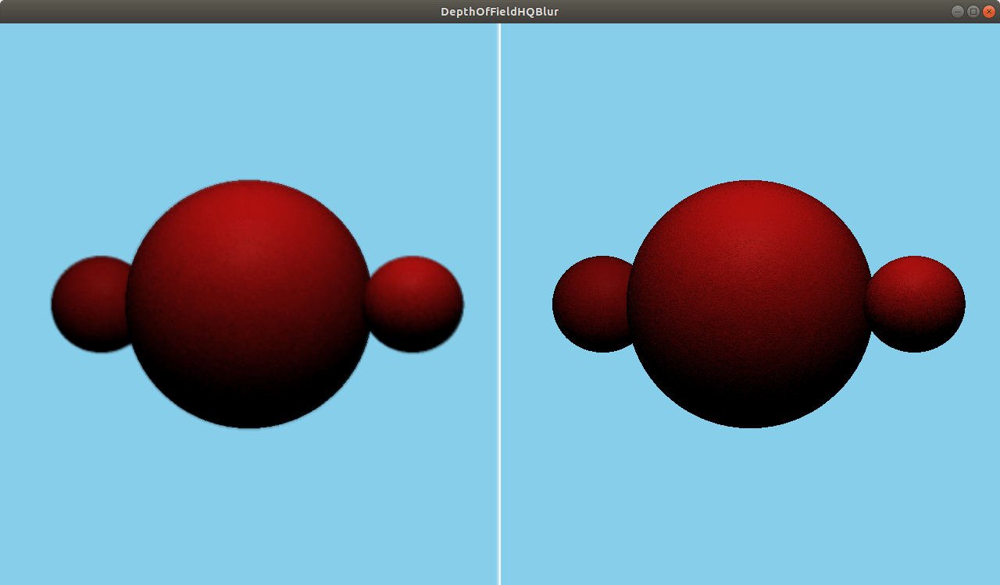

DepthOfFieldHQBlur QML Type
A depth-based blur effect. More...
| Import Statement: | import QtQuick3D.Effects 1.15 |
Properties
- blurAmount : real
- focusDistance : real
- focusRange : real
Detailed Description

The DepthOfFieldHQBlur effect performs a gradient blur on regions of the image based on their deviation from a specified distance from the camera.
For this effect to work well, you need to adjust the clipFar and clipNear properties of the camera for the scene to frame the content. You ideally want the largest possible value for clipNear and the smallest possible value for clipFar. Next, adjust the properties of the effect for the desired result.
For example, a focusDistance of 100 and a focusRange of 20 means that everything that is between 90 and 110 units away from the camera will be entirely in focus, items at a distance of 70-90 and 110-130 units will experience variable blurring, and everything closer than 70 or farther than 130 will be entirely blurred.
See also TiltShift.
Property Documentation
blurAmount : real |
The strength of blur when out of focus. Sensible values are in the range [1...10]. 4 by default.
focusDistance : real |
The distance from the camera where the content is in perfect focus. 600 by default.
focusRange : real |
The distance around the focusDistance where items are fully in focus. The focus then fades away to fully blurred by the same distance on both the near and far sides. 100 by default.